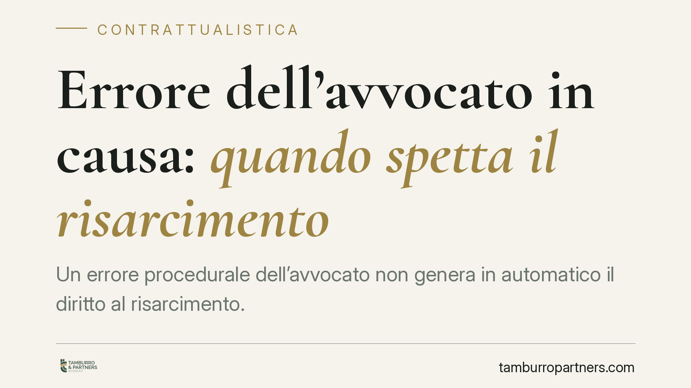

Errore dell'avvocato in causa: quando spetta il risarcimento
Un errore procedurale dell'avvocato non genera in automatico il diritto al risarcimento. Secondo l'orientamento consolidato della Cassazione, il cliente deve dimostrare che, senza quell'errore, avrebbe avuto concrete probabilità di vittoria. Il danno non coincide con lo sbaglio: va provato attraverso un giudizio prognostico sulla causa. Vediamo cosa significa in pratica.

Il fatto
Un cliente cita in giudizio il proprio avvocato per un errore commesso nel corso di una causa poi persa. La vicenda attraversa i tre gradi di giudizio — Tribunale di Vicenza, Corte d'Appello di Venezia e Corte di Cassazione — e ripropone una questione ricorrente: lo sbaglio del difensore, di per sé, basta a fondare il diritto al risarcimento?
La risposta è negativa. L'errore professionale e il danno risarcibile sono due piani distinti. Chi agisce contro il proprio legale non deve limitarsi a segnalare la scorrettezza tecnica: deve dimostrare che quell'errore ha inciso in modo determinante sull'esito, privandolo di una concreta possibilità di successo.
Inquadramento normativo
La responsabilità dell'avvocato si colloca nell'ambito della responsabilità del professionista intellettuale, disciplinata dagli artt. 2229 e seguenti c.c., e trova il proprio parametro di diligenza nell'art. 1176, secondo comma, c.c., che impone al prestatore d'opera qualificato una diligenza rapportata alla natura dell'attività esercitata (la cosiddetta *diligenza qualificata*).
È opportuna una precisazione. La tradizionale distinzione tra obbligazioni "di mezzi" e "di risultato" — in base alla quale l'avvocato risponderebbe solo dell'impegno diligente e non del successo della lite — è stata negli anni ridimensionata dalla stessa Cassazione, che ne ha ricondotto la portata a un valore descrittivo più che dogmatico. Ciò non muta il punto essenziale: l'avvocato non garantisce la vittoria, ma risponde se una condotta negligente ha compromesso le chance del cliente.
Da qui il concetto di perdita di chance: il danno risarcibile non è la sconfitta in sé, ma la perdita della *possibilità concreta e apprezzabile* di ottenere un risultato favorevole. Per accertarlo il giudice compie un giudizio prognostico, ricostruendo idealmente quale sarebbe stato l'esito della causa in assenza dell'errore. Il nesso causale, in questa valutazione, va provato secondo il criterio del "più probabile che non".
Implicazioni pratiche
Per chi ritiene di aver subìto un danno dal proprio difensore, l'impostazione ha conseguenze precise.
Non è sufficiente allegare l'errore — un termine non rispettato, un'eccezione non sollevata, un mezzo di prova non richiesto. Occorre dimostrare che, senza quella mancanza, la causa avrebbe avuto ragionevoli probabilità di essere vinta. Se la posizione era comunque perdente nel merito, l'errore procedurale resta privo di conseguenze risarcibili, perché manca il nesso tra la condotta e il pregiudizio.
L'onere della prova, dunque, grava in modo significativo sul cliente, che deve fornire elementi concreti sulla fondatezza della propria originaria pretesa. Non basta la percezione soggettiva di un torto subìto.
Sul piano temporale, l'azione di responsabilità contrattuale verso il legale è soggetta alla prescrizione decennale ex art. 2946 c.c.. La corretta individuazione del *dies a quo* — il momento da cui il termine inizia a decorrere — richiede un'analisi caso per caso, non essendo sempre coincidente con la data dell'errore.
Cosa fare in concreto
- Ricostruisci la vicenda per iscritto: raccogli atti, corrispondenza con il legale, verbali d'udienza e provvedimenti, individuando con precisione l'errore contestato.
- Verifica la solidità originaria della causa: prima di agire, valuta se la posizione di partenza aveva reali fondamenta nel merito. È opportuno far esaminare il fascicolo da un professionista terzo, così da ottenere una valutazione indipendente sulle probabilità di vittoria.
- Distingui l'errore dal danno: concentra la contestazione non sullo sbaglio in sé, ma sulle sue conseguenze concrete sull'esito.
- Controlla i termini di prescrizione: individua con attenzione il momento di decorrenza del termine decennale, per non pregiudicare l'azione.
- Documenta il nesso causale: predisponi gli elementi utili a sostenere, in un eventuale giudizio, la prognosi favorevole che l'errore ha vanificato.
Conclusioni
La responsabilità dell'avvocato esiste, ma non è automatica. La linea di confine passa dal danno provato, non dall'errore lamentato. Chi intende agire deve muoversi su un terreno probatorio rigoroso, dimostrando che la vittoria non era un'aspirazione, ma una possibilità concreta andata perduta.
*Contributo informativo a cura di Tamburro & Partners Avvocati. Non costituisce parere legale.*
Ogni contratto ha il suo equilibrio.
Se vuoi una revisione delle clausole o una redazione su misura, scrivi allo studio. Ti rispondiamo entro un giorno lavorativo.